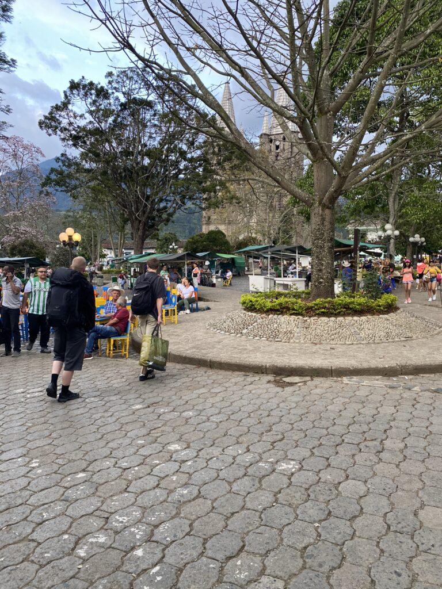
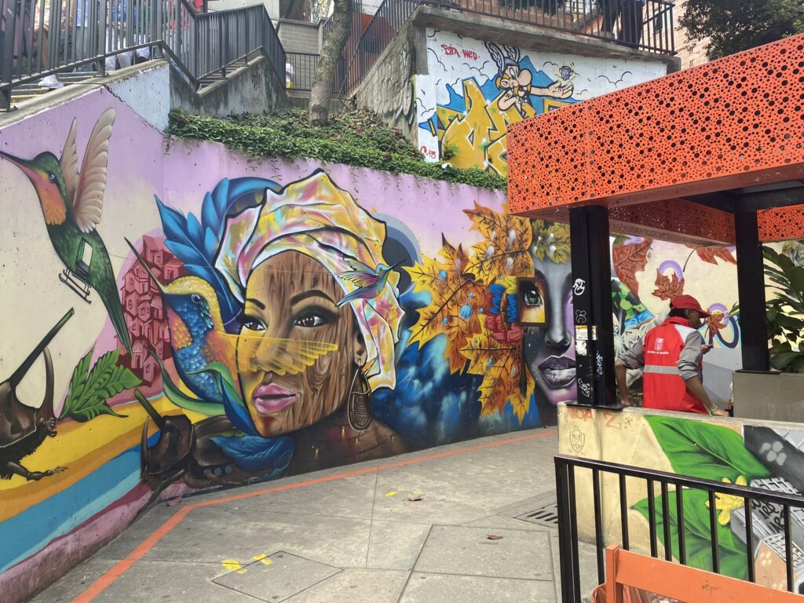
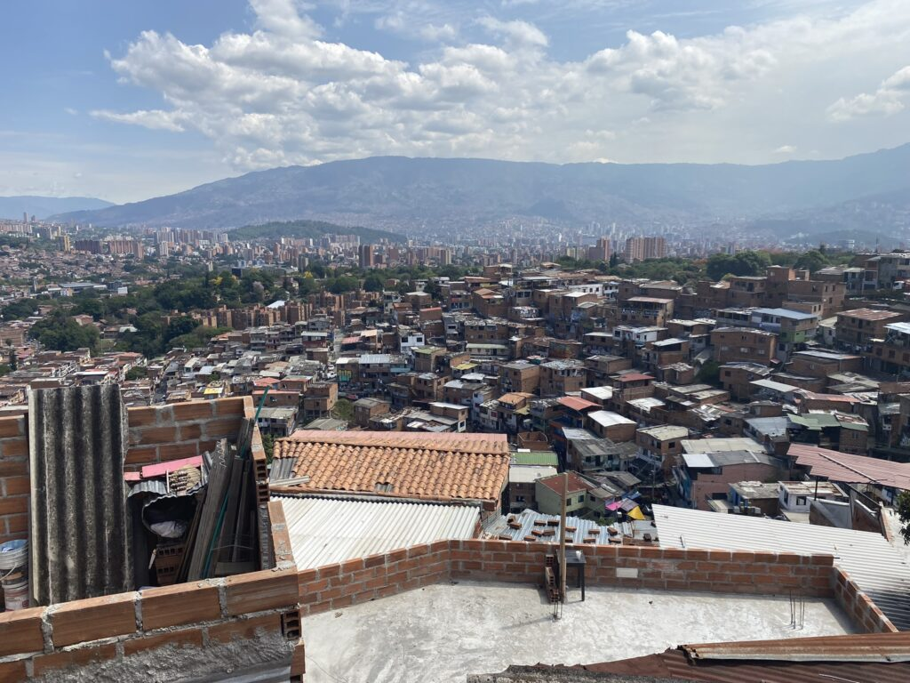
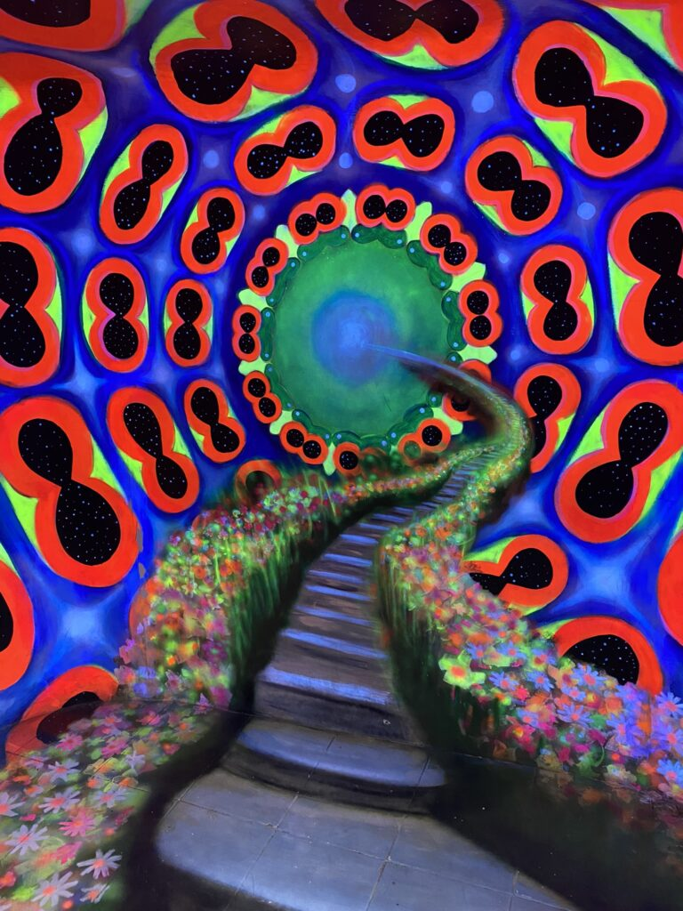

De drukte is overweldigend doch aantrekkelijk. Warme lucht blaast het zweet uit mijn poriën en geluiden uit alle hoeken vergroten mijn desoriëntatie. De stoep staat vol kraampjes die variënde geuren uitstoten. De meeste mensen schreeuwen als ze iets willen zeggen en de gezellige drukte staat in schril constrast met de bedelende menigte. De eerste dag in Colombia maak ik gelijk kennis met Medellín, het bruisende hart van het land. De grootte van de stad wordt in de tang gehouden door een groot metronetwerk, een unicum op mijn reis. Makkelijk transporteer ik me door de stad, die bestaat uit straat 1 t/m nummer zoveel en 16 communes.
Ten eerste richting Comuna 13, de favela die naam maakte met de drugs-guerrilla’s zich daar schuilhielden tijdens de hoogtijdagen van de cocaïnehandel, die nog steeds volop bestaat maar inmiddels gedoogd lijkt met zelfs de politie als dealers. Een bloederige oorlog zette de wijk vol drugstunnels op tilt. Concurrenten moordden elkaar uit en verscholen zich in de bergen als de overheid een infiltratie plande. De politie voelde zich geneigd om tal van onschuldige mensen om te leggen, om maar te laten zien dat ze iets deden. Tegenwoordig herinnert alleen het druk bezette kerkhof aan de oorlogstijd, die slechts twintig jaar geleden afliep. De wijk bestaat uit één slingerende weg op de bergwand en wordt gedomineerd door graffiti, dans en muziek. Simpele huisjes wisselen zich af met hippe barretjes, galeriën, musea en winkels. De gids weet in mager Engels weinig te vertellen, maar zorgt in ieder geval dat ik niet verdwaal in de prikkelende omgeving. De wijk straalt nu positiviteit, warmte en leven uit, neerkijkend op de massieve stad die zich tentoonstelt in het dal.



Benauwd
Zelf verblijf ik in El Poblado, de hotspot en enigzins veilige regio tussen het bolwerk van criminaliteit. Ik ontmoet twee Denen met wie het onmiddelijk klikt en er ontstaat zelfs een onafscheidelijke band. Samen zouden we de hele dag op het dakterras kunnen darten en ons geen moment vervelen, maar de stad nodigt te veel uit tot avontuur. De volgende dag laten we ons naar de bergen brengen aan de rand van de stad voor een hoogstaande primeur: paragliden. De vertrekbaan op een grasveld is een oase van rust. Slechts een paar meter sprinten is genoeg om de vlieger zijn werk te laten doen en te vertrouwen op de natuurkunde die ik niet begrijp. De instructeur doet al het stuurwerk terwijl de stad onderdanig naar me opkijkt. Een zwerm vogels zweeft naast me en tart ondeugend met mijn snelheid, maar ik kan me eindelijk met hen meten. Hoger en hoger cirkelen we totdat we met een snoekduik weer richting de landingsbaan dalen en soepel op de voetjes landen. Ik kijk mijn kersverse reisgenoot aan en herken de gelukzalige blik: de rest van de dag kan niet meer stuk.

Die avond begint een weekend die in een grote roes voorbijvliegt; zwetende clubs, salsabarrerjes, groene terrasjes, vrouwen, slapeloze nachten. De ontdekking van de strip is een schok. Het geeft de Albufeira-vibes waarvan je hoopte dat die niet tot dit continent waren doorgedrongen. Eindeloze straten vol dronken gringo’s en clubs met meerdere verdiepingen met muziek die je niet wil horen. Toch wordt je elke avond weer de stad in gelokt, maar blijkt het gezelschap veel belangrijker dan de omgeving. Queers en gays kunnen vrijuit zichzelf zijn, maar ook de bedelende menigte verzamelt zich in het nachtleven. Daklozen liggen naakt op stadsbankjes en inheemse inwoners dansen de hele nacht met baby’s op hun arm op de stoep, hopend op een aalmoes.
Een hoogtepunt is de wedstrijd in het stadion van Atlético Nacional, de voetbalclub die ooit van Pablo Escobar was. Op de wedstrijddag kijken we in het tenue van de club uit naar een tranquilo zomeravond potje, maar de sfeer blijkt grimmiger dan gedacht. We zitten in het vak van de enorme groep ultra’s, waar de sfeer eerst nog gemoedelijk is met fanfarebands. Hoe drukker het wordt, hoe duidelijker het wordt dat de aanwezigheid van ons gringo’s niet wordt gewaardeerd. De liederen die aan één stuk door worden gezongen kennen we niet en een Nederlandse metgezel draagt een Colombiashirt, wat verkeerd valt bij de doorgesnoven messentrekkende hooligans. We verplaatsen ons naar een rustiger deel en zien een klassieke Zuid-Amerikaanse pot met twee rode kaarten, een gemiste penalty en een kopstoot.
Meer vertier vinden we in de botanische tuinen, het Escobar-museum en een dorpje bovenop een berg midden in de stad, voordat we wederom in de nacht verdwijnen.